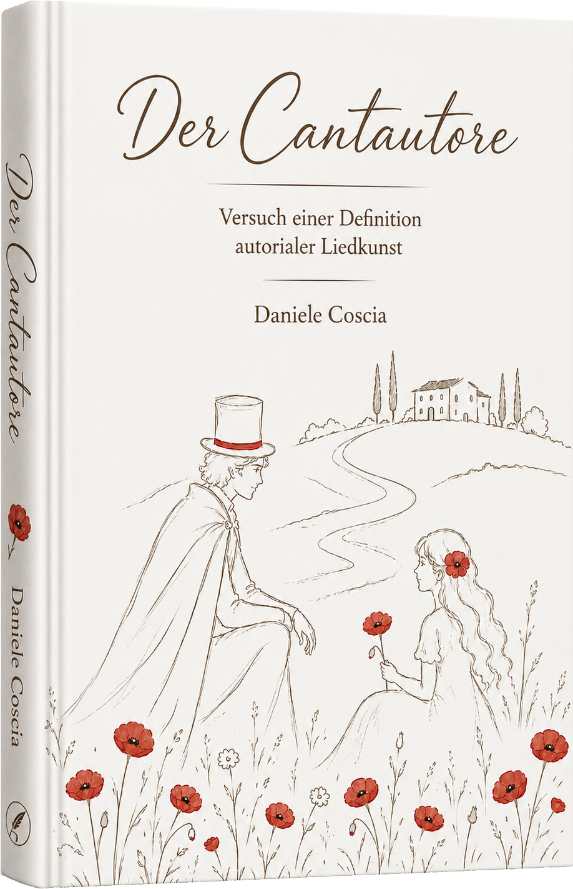

Der Cantautore
Versuch einer Definition
autorialer Liedkunst
Ein kulturhistorisch und essayistisch geschriebenes Buch über die besondere Verbindung von Text, Musik und persönlicher Aussage.

Das Buch
Cantautore, Singer-Songwriter, Chansonnier – oder wie sie alle heißen mögen. Die hohe Form der Liedkunst trägt viele Namen, doch selten wird gefragt, ob sich hinter ihnen ein gemeinsames Handwerk verbirgt. Gibt es verborgene Kriterien, musikwissenschaftlich greifbar, die diese Kunst von bloßer Popmusik unterscheiden? Und wenn ja: Wie lassen sie sich beschreiben, ohne dass die Magie dabei verdunstet?
Diese Untersuchung stellt sich dieser Frage – und einer zweiten, praktischeren: Muss man das Talent eines Lucio Dalla oder Leonard Cohen haben oder kann ein Musiker sich diese Kriterien aneignen? Kann er der beschleunigten, akustischen Oberflächlichkeit unserer Zeit etwas entgegensetzen, das Bestand hat?
Die Reise beginnt dort, wo diese Liedkunst am dichtesten, am kompromisslosesten gewachsen ist: in Italien. Sie endet in Amerika. Dazwischen liegt eine musikalische Wanderung mit Tiefe, mit Geschichte – und, der Ehrlichkeit halber, mit der einen oder anderen Bar. Es ist kein reines Sachbuch, definitiv kein Roman und auch kein Essay im strengen Sinn. Was es ist, lässt sich schwerer fassen – aber leichter adressieren.
Geschrieben habe ich es für Dich, musikbegeisterten Leser, der verstehen will, warum ein Lied bleibt, wo tausend andere verklingen. Für Dich, italophiler Klangliebhaber, der die Linie von Sanremo nach New York ziehen möchte. Und für Dich, Songschreiber – der nicht den schnellen Erfolg sucht, sondern die Langzeitwirkung. Für jeden, der seinen musikalischen Horizont erweitern will, und keine Angst davor hat, dass die Reise dorthin auch mal umwegig verläuft.
Leseprobe
Auszüge aus dem Buch werden hier veröffentlicht.
KI-Check Musik
Analysen ausgewählter Lieder zur Frage, wie künstliche Intelligenz musikalische Autorschaft, Komposition und kulturelle Bedeutung bewertet.
Über den Autor
Daniele Coscia ist Autor und Kulturessayist. Seine Arbeit beschäftigt sich mit Musik, Kulturgeschichte und Formen künstlerischer Ausdruckskraft.
Kontakt
Kontaktinformationen folgen.